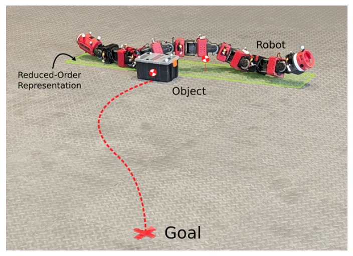
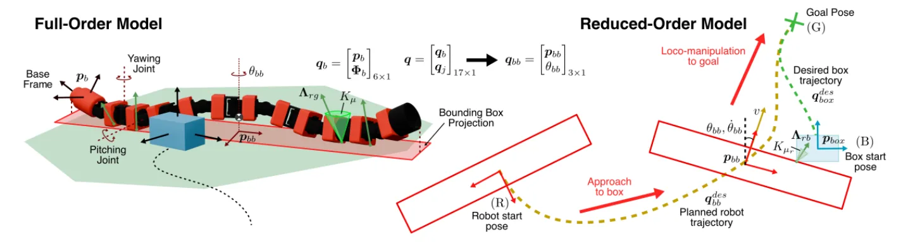
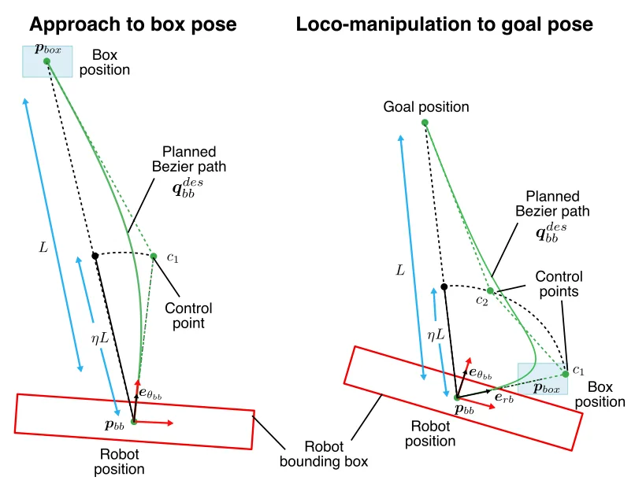
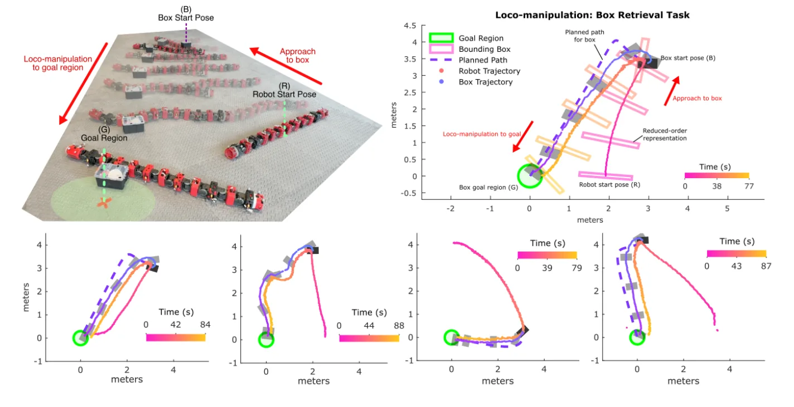

O problema da decomposição funcional em robôs serpente
Robôs serpente são plataformas fascinantes para operar em ambientes não estruturados. Sua morfologia hiper-redundante permite locomoção sobre areia, degraus e através de obstáculos complexos como tubos e escadas. No entanto, quando o objetivo muda de apenas se mover para interagir com objetos no ambiente, surge um desafio de planejamento significativo: a loco-manipulação, ou seja, a execução simultânea de locomoção e manipulação.
Em plataformas convencionais, como robôs quadrúpedes ou com rodas, essa função é frequentemente desacoplada. As pernas ou rodas fornecem uma base estável e reposicionável, enquanto um braço robótico dedicado executa a tarefa de manipulação. Essa separação clara simplifica o controle, mas limita a adaptabilidade morfológica. Robôs serpente, por outro lado, não possuem essa decomposição funcional óbvia. Todo o corpo serve simultaneamente como mecanismo de propulsão e ferramenta de manipulação.
Trabalhos anteriores tentaram contornar essa complexidade dividindo o robô em segmentos ou adicionando garras dedicadas. Alguns usam a cabeça para manipulação enquanto o corpo se move; outros estabilizam uma seção no ambiente enquanto outra executa tarefas delicadas. Embora eficazes para tarefas específicas, essas abordagens não exploram o potencial completo da interação distribuída ao longo do corpo. O presente trabalho aborda essa lacuna, propondo uma loco-manipulação de corpo inteiro onde qualquer parte do corpo pode fazer contato com o objeto ou o chão, sem distinção rígida de subsistemas.

A ideia central: unificação através do contato implícito
A contribuição central deste paper é a formulação de um modelo dinâmico que unifica as interações robô-terreno, robô-objeto e objeto-terreno dentro de um framework de stepping temporal Moreau-Jean. Essa abordagem permite lidar com as transições bruscas de contato e as restrições de fricção de forma contínua e numericamente estável, algo crítico para robôs com múltiplos pontos de contato como as serpentes.
Em vez de tratar a locomoção e a manipulação como tarefas separadas sequenciais, os autores desenvolvem um planejador de trajetória sobre a dinâmica de ordem completa do robô. Este planejador é guiado por um planejador geométrico simplificado e um controlador proporcional nominal. O resultado é um sistema capaz de realizar a tarefa de empurrar um objeto até uma localização de destino durante a execução de um movimento lateral (sidewinding), tudo de forma autônoma e em loop fechado.
Essa unificação é particularmente desafiadora porque as forças de propulsão e as forças de manipulação são acopladas. Uma mudança na postura para melhorar a tração no chão pode alterar a direção do empurrão no objeto. O modelo proposto leva em conta explicitamente os impulsos de contato e os cones de fricção, permitindo que o otimizador de trajetória encontre soluções que equilibrem essas forças conflitantes para alcançar o objetivo global.
Metodologia: Do modelo completo ao planejador reduzido
A arquitetura do sistema é dividida em duas camadas principais: o modelo de ordem completa para simulação e validação de alta fidelidade, e um modelo reduzido para o planejamento de trajetória em tempo real. A Figura 2 ilustra essa distinção. O modelo completo inclui a pose da base flutuante, as coordenadas das juntas, os impulsos de contato robô-terreno e as projeções das caixas delimitadoras.
Para o planejamento, os autores utilizam um espaço reduzido que define apenas a pose inicial do robô, a pose inicial da caixa e a pose de destino. Isso reduz drasticamente a complexidade computacional do problema de otimização. A trajetória desejada é dividida em duas fases: uma fase de aproximação, onde o robô se posiciona para começar a empurrar, e uma fase de loco-manipulação, onde o empurrão propriamente dito ocorre.
Para gerar as trajetórias de referência nessas fases, os autores empregam curvas de Bézier. Na fase de aproximação, uma curva de Bézier de segunda ordem com um único ponto de controle ao longo da direção deHeading é utilizada para posicionar o robô eficientemente. Já na fase de loco-manipulação, uma curva de Bézier de terceira ordem é usada, com pontos de controle que consideram tanto a direção do robô quanto a relação robô-caixa. Essas curvas servem como guia para o otimizador dinâmico, que ajusta os comandos de torque e postura para seguir a trajetória suavemente, respeitando as restrições físicas.

Implementação e Controle em Loop Fechado
O planejador de trajetória não opera sozinho. Ele é integrado a um controlador em loop fechado que monitora o estado atual do robô e do objeto. Se houver desvios devido a perturbações externas ou imprecisões no modelo, o controlador corrige a trajetória em tempo real. Isso é vital para a robustez, já que a interação física é inerentemente instável e sensível a variações de atrito e massa.
O controlador proporcional nominal atua como uma camada de baixo nível que tenta seguir a trajetória gerada pelo otimizador. No entanto, a inteligência do sistema reside na capacidade do otimizador de antecipar as consequências dinâmicas de cada movimento. Ao formular o problema sobre a dinâmica de ordem completa, o planejador sabe que mover uma parte do corpo para frente não apenas avança o robô, mas também aplica uma força específica no objeto, considerando a fricção do chão.
Essa abordagem contrasta com métodos anteriores que dependiam de garras ou de uma separação rígida entre 'andar' e 'empurrar'. Aqui, o movimento lateral (sidewinding) é adaptado para maximizar a eficiência do empurrão. O robô não apenas se move; ele usa seu corpo como uma alavanca distribuída, aproveitando o contato distribuído para gerar força no objeto alvo.

Resultados em Hardware e Simulação
Os autores validaram seu método tanto em simulação quanto em hardware real, utilizando o robô serpente COBRA. Os resultados em hardware demonstram a capacidade do sistema de empurrar uma caixa de um ponto inicial até uma região de destino, mesmo com variações nas configurações iniciais. A Figura 5 mostra snapshots compostos de um teste representativo, onde é possível observar a trajetória do centro de massa do robô e a trajetória da caixa alinhadas com o objetivo.
Os dados experimentais mostram que o robô consegue manter o contato com a caixa e aplicá-lo de forma consistente ao longo da trajetória. O controlador em loop fechado foi capaz de corrigir pequenos desvios, mantendo a eficiência do empurrão. Isso confirma que o modelo dinâmico unificado captura adequadamente as interações físicas críticas para a tarefa.
Além dos testes em hardware, os autores apresentaram resultados de simulação para uma versão simplificada do otimizador de trajetória. Essa simplificação foi usada para resolver problemas de contato robô-objeto e objeto-terreno em cenários mais complexos, demonstrando a escalabilidade da abordagem. A simulação permitiu explorar um espaço de parâmetros maior do que seria viável experimentalmente, validando a robustez do planejador geométrico e do controlador.

Limitações e Escopo do Trabalho
É importante destacar o escopo deste trabalho. A tarefa focada é o empurrão não-preênsil de um objeto rígido. O paper não aborda a manipulação preênsil (pegar e transportar) ou a manipulação de objetos deformáveis. Além disso, a validação experimental foi realizada em configurações específicas de terreno e atrito. A generalização para terrenos altamente irregulares ou com atrito variável ao longo do tempo requer mais investigação.
Outra limitação reside na complexidade computacional do otimizador de ordem completa. Embora o modelo reduzido seja usado para o planejamento de alto nível, a geração de trajetórias viáveis ainda pode ser computacionalmente intensiva, o que pode limitar a frequência de atualização do controlador em cenários de alta dinâmica. O paper sugere que a simplificação do otimizador ajuda, mas o trade-off entre fidelidade do modelo e velocidade de cálculo permanece um desafio prático.
Finalmente, o trabalho assume que o objeto a ser manipulado tem propriedades físicas conhecidas (massa, centro de massa, coeficiente de atrito). Em cenários reais, onde essas propriedades podem ser incertas ou variáveis, a robustez do sistema dependeria de extensões do controlador para estimar esses parâmetros online, algo que não é abordado nesta versão inicial do framework.
Conclusão e Perspectivas
Este paper representa um passo significativo na direção de robôs serpente mais versáteis. Ao unificar locomoção e manipulação em um único framework dinâmico, os autores demonstram que a hiper-redundância não é apenas uma vantagem para navegação, mas também uma ferramenta poderosa para interação física. A eliminação da necessidade de garras dedicadas ou segmentação rígida abre caminho para designs mais simples e robustos.
Para a comunidade de robótica, os principais insights são a aplicação do framework Moreau-Jean a problemas de loco-manipulação de corpo inteiro e o uso de planejadores geométricos baseados em Bézier para guiar otimizações dinâmicas complexas. Isso oferece um blueprint para outros robôs flexíveis ou hiper-redundantes que precisam interagir com o ambiente de forma integrada.
O trabalho deixa em aberto questões sobre a extensão para múltiplos objetos, a integração com percepção visual para manipulação de objetos não vistos previamente e a adaptação em tempo real a mudanças drásticas no ambiente. No entanto, a validação em hardware fornece uma base sólida para essas extensões futuras. Para desenvolvedores e pesquisadores, o código e os modelos apresentados podem servir como ponto de partida para explorar a fronteira entre locomoção e manipulação em morfologias não convencionais.
O que fica
- Robôs serpente podem realizar loco-manipulação de corpo inteiro sem garras dedicadas, usando o corpo como ferramenta de propulsão e manipulação simultaneamente.
- Um modelo dinâmico unificado baseado no framework Moreau-Jean permite lidar com interações complexas de contato e fricção em tempo real.
- O uso de curvas de Bézier para gerar trajetórias de referência facilita a otimização dinâmica de ordem completa, equilibrando eficiência computacional e precisão.
- Validação em hardware com o robô COBRA demonstra a viabilidade do controle em loop fechado para empurrar objetos durante movimentos de locomoção lateral.
Paper original: Autonomous Whole-body Loco-manipulation Using a Snake Robot
Comentários
Nenhum comentário ainda. Seja o primeiro.